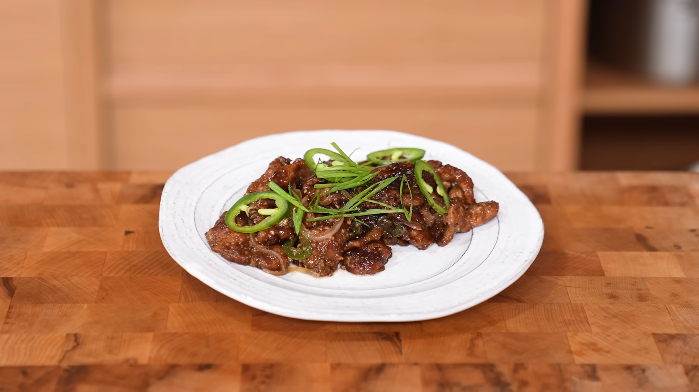

Pork Stir Fry

This recipe is presented as a complete meal option and encourages venturing out to try new proteins, highlighting pork as a cheap and underrated cut. The stir-fry balances acidity, sweetness, and umami, with pork becoming crispy from the cornstarch, creating a glossy, thick, almost teriyaki-like glaze. A recipe by Joshua Weissman
Meals So Easy A College Student Could Make It
Ingredients
- Boneless Boston Butt Roast (pork): 1 pound or 450 g
- Vegetable oil: A couple tablespoons
- Cornstarch: For coating the pork
- Yellow onion: Half, thinly sliced
- Jalapeno: One, thinly sliced (for cooking)
- Sugar: 1 tablespoon or 12 g
- Soy sauce: 2 tablespoons or 30 g
- White distilled vinegar: 1 tablespoon or 15 g
- Garlic: Four cloves, finely chopped
- Jalapeno: Thinly sliced (as optional garnish)
Steps
- Prepare the Pork: Slice 1 pound or 450 g of boneless Boston Butt Roast as thinly as possible. Freezing for an hour can help with thin slicing but is not mandatory.
- Sear the Pork: Heat a large pan (any large pan on any heat surface will do, although a wok is traditional) over very high heat with a couple of tablespoons of vegetable oil. Once the pan is nearly smoking, toss your sliced pork in cornstarch to coat all sides, shaking off the excess. Sear the pork in batches for 2 minutes per side.
- Add Vegetables: Add half a thinly sliced yellow onion and one thinly sliced jalapeno to the pan. Toss constantly until the vegetables begin to soften, about 1 minute.
- Create the Sauce: Add 1 tablespoon or 12 g of sugar, 2 tablespoons or 30 g of soy sauce, and 1 tablespoon or 15 g of white distilled vinegar to the pan. Toss constantly until the sauce reduces into a glossy, beautiful syrup coating all pieces.
- Finish and Serve: Cut off the heat. Add four cloves of finely chopped garlic and toss until evenly distributed. Serve immediately, with thinly sliced jalapeno as garnish if desired.
Back to Home